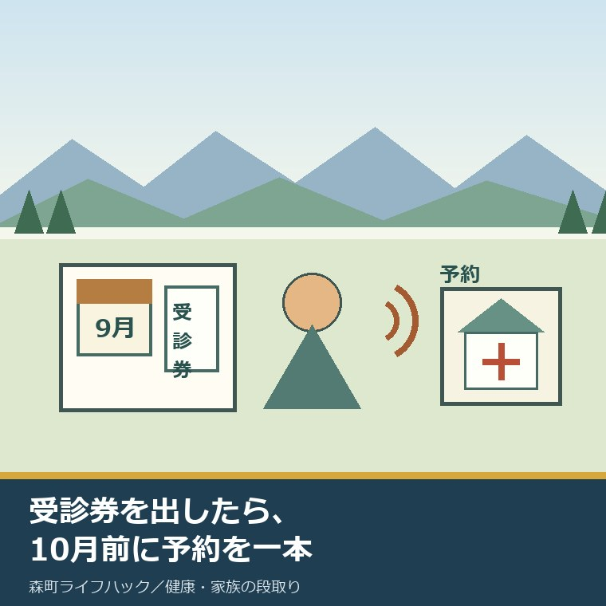
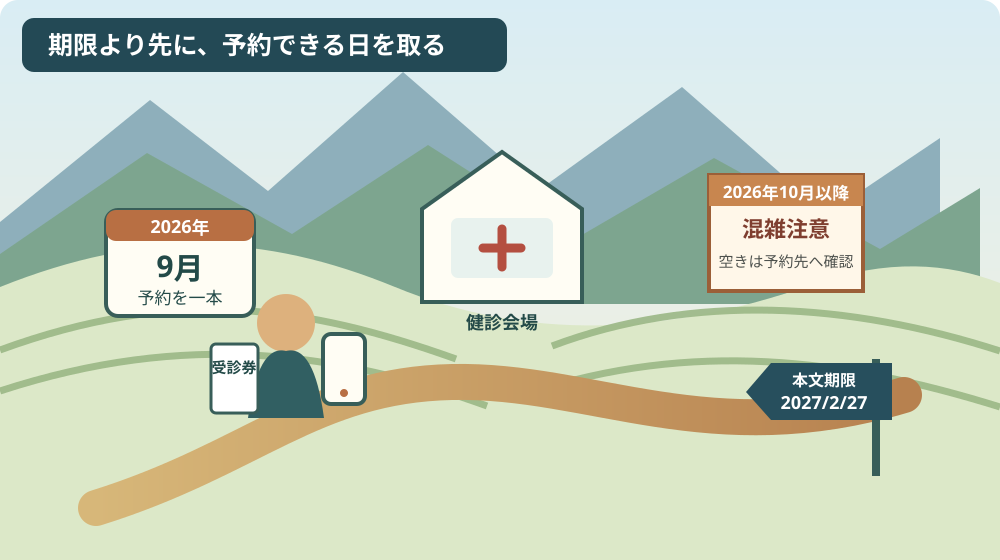
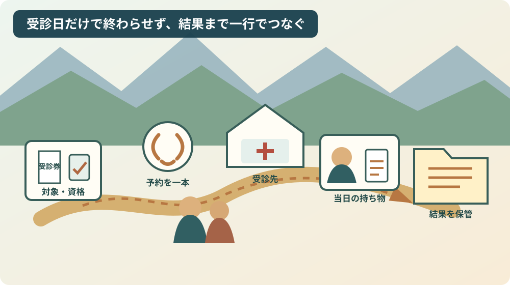

森町の特定健診2026｜予約は10月前に

この記事の要点
Q. 森町国保の特定健診受診券があります。いつ、何から動きますか。
A. 特定健診は予約が必要です。公式ページ本文の期限は2027年2月27日ですが、開業医等は2026年10月以降に混みやすいと町が注意しています。2026年9月7日に受診券と資格確認書類を出し、区分に合う予約窓口へ1本連絡します。
森町国保の特定健康診査受診券が届いていても、封筒の中に入ったままなら、受診日はまだ決まりません。
仕事、通院、家族の送迎を合わせてから電話しようと思うほど、予約の一手が後ろへ回りやすくなります。
森町は、健診受診には予約が必要だと明記しています。さらに、開業医等で2026年10月以降の受診を希望すると、予防接種や感染症等の流行で混雑し、予約が入りにくくなる場合があると注意しています。
この記事は、森町国保の40～74歳で、受診券はあるがまだ予約していない人と、その予定を支える家族に向けた実務整理です。
2026年9月7日に、森町公式ページ、令和8年度特定健診受診方法PDF、年度途中の受診フローを照合しました。
森町の健康診断とがん検診の違いを整理したページは、特定健診以外も含めて入口を選ぶときに使えます。この記事は森町国保の特定健診へ範囲を絞ります。
体験ストックには、私自身が森町の特定健診を予約、受診した記録も、家族の予約を代行した記録もありません。「電話したら取れた」「この医院なら空いていた」とは書きません。
公表事実と私の意見を分け、空き状況や個別の受診可否は受診先と森町へ確かめる前提で進めます。
森町の特定健診2026は予約が必要
森町公式ページは2026年7月24日に更新され、令和8年度の特定健診について案内しています。
ページの説明は明快です。「健診受診には、予約が必要です。」と書かれています。
受診券を持っていることと、受診枠を持っていることは別です。受診券の有効期間だけを見て待っていても、日時は確保されません。
2026年9月7日に決めるのは、健診の全工程ではありません。まず個別健診か集団健診かを確認し、該当する予約先へ一度連絡します。
本人が電話しにくい時間帯なら、家族は勝手に日時を確定する前に、本人が動ける曜日と時間を二つ聞いておきます。
家族が連絡できるか、本人確認に何が要るかは予約先ごとに異なり得ます。本人が横にいる時間に電話する方が、折り返しを減らせます。
対象は森町国保の40～74歳、受診日の資格を見る
森町公式ページ本文は、特定健診を「40歳から74歳まで」の人を対象に、加入する医療保険者である森町国保が実施する健診と説明しています。
連携PDFは年齢をさらに細かく書き、2026年4月1日時点で39歳から、受診日時点で74歳までの森町国保加入者を対象としています。年度中に40歳になる人を含む読み方です。
年齢だけで決めない点が大切です。受診日時点で森町国保の資格を失っている場合は受診できません。
資格喪失後に誤って受診すると、森町国保が負担した全額の返還を求められる場合があると町は注意しています。
転職、扶養への加入、町外転出などで保険が変わった人は、届いた受診券が手元にあっても資格を再確認します。
75歳以上は後期高齢者医療保険の健康診査が対象です。特定健診の期限や予約方法をそのまま当てはめません。
社会保険等の本人も、この森町国保特定健診の対象としては書けません。勤務先や加入保険者の案内を確認します。
実施期間は2026年6月1日から、本文上は2027年2月27日まで
森町公式ページ本文が示す実施期間は、2026年6月1日（月）から2027年2月27日（土）までです。
ところが、同じページから案内される令和8年度特定健診受診方法PDFの個別健診欄は、2027年2月28日（日）までとしています。
本文とPDFで終了日が1日一致しません。私は、どちらが正しい期限かを一次情報だけで断定できません。
そのため、この記事では森町公式ページ本文の2027年2月27日を主表示し、安全側にその日までの受診を予定します。
2027年2月28日に受けられると見込んで予約を遅らせることは勧めません。個別の最終日は受診先か健康こども課へ確認してください。
期限が長く見えても、予約枠は均等に残るとは限りません。期限の日付と、予約できる日付を分けて考えます。

10月以降は予約が入りにくい場合がある
町が挙げる混雑理由は、開業医等での予防接種と感染症等の流行です。
つまり、2026年10月1日を過ぎた瞬間に受けられなくなるという意味ではありません。2026年10月以降は希望日に入りにくい場合があるという注意です。
逆に、2026年9月中なら必ず予約できるとも公表されていません。各医院の空き、予約締切、受付時間は2026年9月7日時点で確認できません。
集団健診の日程表には2026年10月21日もありますが、その日の空きは確認できません。当初申込後の追加受付ができるかも資料だけでは断定できません。
65歳の肺炎球菌接種を整理した記事と並べる人は、健診と接種を同じ予約だと思わず、期限、予約先、持ち物を別行にします。
同じ秋の医療予定でも、健診枠と予防接種枠は別です。二つを一度に決めようとして電話を延ばすより、特定健診の空きだけを先に聞きます。
受診券と資格確認書類をそろえる
受診時の持ち物として、町は「資格確認書又は資格情報のお知らせ」と「特定健康診査受診券」を挙げています。
対象者には2026年4月上旬に「令和8年度健康診査 確認書兼申込書」が送られ、必要事項を記入して返信する流れでした。
申込内容に応じ、集団健診受診者を除く対象者には2026年5月下旬頃に受診券が送られています。
年度途中に開業医等で受診する場合、受診券が見つからなければ健康こども課へ発行を依頼します。急ぐ場合は窓口発行できる場合があります。
公立森町病院を希望する場合は、健康こども課への申込時に受診券がない旨を伝えます。その他の受診先も含め、受診券なしで直接行かず、区分ごとの手順を健康こども課へ確認します。
8月1日に入れ替わる医療・介護の書類を確かめる記事は、親の資格確認書類を家族が探すときに使えます。
紙を写真で共有する場合は、受診券番号や資格情報を家族のグループへ広く流さず、予約を担う一人と本人の間で必要欄だけを確認します。
1,500円で受ける標準項目を確認する
森町は、1万円相当の検査を自己負担1,500円で受けられると案内しています。
意外だったのは、この差額の大きさだけではありません。連携PDFを見ると、標準項目と追加項目が分かれています。
標準の特定健診には、問診、身体計測、診察、血圧測定、尿検査、血液検査が含まれます。
血液検査は、血糖、脂質、肝機能、腎機能、貧血などを確認する構成です。
「特定健診プラス」は詳しい肝機能検査等を300円で加え、合計1,800円と案内されています。
眼底検査と心電図検査は、希望して追加すると施設別の自己負担があります。健診時の血圧値等から医師が必要と判断した詳細健診なら無料になる場合があります。
全員の眼底・心電図が無料だとは書けません。予約時に標準項目、希望追加、施設別費用を分けて聞きます。
PDFには自己負担額が変更される場合があるとの注記もあります。支払額は受診先へ最終確認します。
個別健診と集団健診を混ぜない
受診方法は一つではありません。個別健診と集団健診では、予約先と日程の決まり方が違います。
| 区分 | 資料上の主な受診先 | 予約の入口 | 2026年9月7日の注意 |
|---|---|---|---|
| 開業医等の個別健診 | 近隣開業医等 | 各医院へ直接予約 | 空き、締切、受付時間は各医院へ確認 |
| 公立森町病院 | 公立森町病院 | 年度途中フローでは健康こども課へ連絡し、病院が日程を指定 | 病院へ直接予約する流れではなく、希望日に沿えない場合あり |
| 森町家庭医療クリニック | 森町家庭医療クリニック | 資料記載の電話85-1340へ予約 | 最新の空きは電話で確認 |
| 聖隷の個別健診 | 聖隷予防検診センター、聖隷健康診断センター | 聖隷予約センター0120-938-375 | 受診券到着前の予約は、到着後に内容の再連絡が必要 |
| 集団健診 | 三倉総合センター、総合体育館の検診車 | 完全予約制。申込内容により町が日時を案内 | 2026年10月21日の空きと追加申込可否は未確認 |
公立森町病院については、年度途中フローに「森町病院への予約連絡は不要」とあります。健康こども課へ連絡し、病院が受診日を指定する流れです。
集団健診は希望日を申告できても、定員があり、希望日に沿えない場合があります。受付時間も指定できないとPDFにあります。
予約先を取り違えると、住民も受付側も同じ説明を繰り返すことになります。受診券の案内で自分の区分を見てから電話します。
職場健診・人間ドックを受ける人は結果提供という道もある
特定健診を受けず、人間ドックや職場の健診を受ける人に対し、森町は健診結果の提供へ協力を求めています。
提出時は、特定健診問診票（結果把握用）へ記入し、結果のコピーを添える案内です。
職場健診を受けたから町の受診券を捨ててよい、町へ必ず提出しなければならない、とこの記事だけで一律には決めません。
同じ検査を二重に受けないため、勤務先健診の日、検査項目、森町へ結果を出すかを健康こども課へ確認します。
原本を郵送するのではなく結果のコピーとされている点も見落とさないようにします。提出先住所は公式本文と共通フッターで郵便番号が一致しないため、この記事には転記しません。
受診後は結果を前年と比較して保管する
受診日は終点ではありません。結果を受け取った日、説明を聞いた日、次に受診する目安を残します。
健診結果は、血圧、血糖、脂質などを自己判断で良し悪しにせず、前年との差と医療者の説明を並べて保管します。
健診の結果、生活習慣を改善する必要がある人には、特定保健指導が行われます。
特定保健指導の案内が届いた後の参加方法は、受診後の次の段取りを確認するときに使えます。
家族が結果を保管するなら、本人の同意なく数値を親族全員へ共有しません。原本の場所と、本人が共有してよい範囲を決めます。
一度の数値から病名を決めず、再検査や受診の指示があれば、期限と予約先を新しい一行にします。
良い点：1万円相当の検査を1,500円で受けられる
良い点は、森町国保の対象者が、町の説明で1万円相当とされる検査を自己負担1,500円で受けられることです。
対象、受診券、持ち物、予約の必要性が公式ページにまとまり、個別健診と集団健診の選択肢もあります。
町の人は既に、仕事を休む調整、通院の移動、食事や服薬の確認、家族の送迎という負担を払っています。
医療機関と町の職員も、予約枠、受診券、資格、結果をつなぐ作業を担っています。その積み重ねを当然とは考えません。
費用を抑えた入口と複数の受診先があることは、その努力を受診へ結び付ける土台です。
注文したい点：本文とPDFの期限を一日にそろえてほしい
その上で、公式ページ本文の2027年2月27日と、連携PDFの2027年2月28日は一日にそろえてほしいところです。
期限が一日違うだけ、と片付けることはできません。最後の週にしか家族の送迎を組めない人には、予約可能日を左右する違いです。
個別健診と集団健診、年度途中の申込、受診券再発行も別資料に分かれています。読者が自分の入口を一枚で判定できる分岐表があると助かります。
各医院の空きを町がリアルタイムで保証するのは難しいでしょう。それでも、誰へ最初に電話するかと、期限不一致の訂正日は同じページで示せます。
私は2027年2月27日と2月28日のどちらかを推測で丸めません。不一致そのものを知らせ、早い方へ予定を置くのが実務です。
住民の問い合わせを減らすことは、健康こども課や医療機関の説明負担を減らすことにもつながります。

対案・結論：2026年9月7日に該当窓口へ1本だけ連絡する
今日できる小さな一歩は、2026年9月7日に受診券と資格確認書類を机へ出し、自分の区分に合う予約窓口へ1本だけ連絡することです。
電話前に、氏名、生年月日、森町国保の資格、受診券の有無、希望曜日を二つ、紙へ書きます。
開業医等へ直接予約する人は、最も早い空き、自己負担、当日の持ち物、追加検査の申込方法を聞きます。年度途中に公立森町病院を希望する人は健康こども課が入口で、集団健診の人は町から届いた日時案内を確認します。
受診券がない人は、区分を伝えて健康こども課健康づくり係へ発行手順を聞きます。連携PDFの連絡先表記は85-6330です。
電話がつながらなければ、かけた日時と次にかける時間を残します。「連絡できなかった」を「予約できない」に置き換えません。
予約できたら、受診日、場所、出発時刻、移動手段、付き添う人、持ち物を一行にします。
2026年9月7日に受診まで終える必要はありません。予約先が一つ決まり、次の電話時刻が置ければ、今日の一歩は完了です。
大石の視点：健康の理念より、予約・移動・家族の段取りを先に置く
ここまでの対象、費用、期間、予約、持ち物は森町の公表資料で確認した事実です。以下は大石浩之としての意見です。
「年に1回は体を確認しましょう」という呼びかけに異論はありません。ただ、受けましょうだけでは予約は取れない。
受診券が見つからず、車を出す人が決まらず、電話一本が宙に浮けば、2027年2月27日は近づきます。健康の話を善意で終わらせない方がよい。
森町の人は、健康への無関心で止まっているのではなく、仕事、家族、通院、移動を既に回しています。その努力と負担を先に認めたいと思います。
その上で打開が要る具体名詞は、予約の担い手と会場までの移動です。本人一人の記憶だけに置けば、家族の予定変更で止まります。
私には森町で特定健診を受けた体験がありません。ここからは、家計と家族の段取りを見る事業者としての提案です。
健診の価値を長く説明するより、受診券、電話番号、希望日、車を出す人を一枚に書く。理念より、この段取りの方が2026年9月7日の行動を生みます。
本人が一人で動けるなら家族が管理を奪う必要はありません。困る部分だけを一緒に決め、受診後の結果も本人の意思を中心に扱います。
まとめ：2026年10月前に受診日を一つ確保する
森町国保の特定健診は、40～74歳が基本対象で、受診日時点の資格と予約が必要です。
森町公式ページ本文の期間は2026年6月1日から2027年2月27日までですが、PDFは2月28日と記し、終了日が一致しません。
開業医等は2026年10月以降に混みやすい場合があります。2026年9月中に空きを確認し、受診券、資格確認書類、移動の担い手を一行にします。
1万円相当の標準検査は自己負担1,500円と案内されています。追加項目の費用と個別の受診可否は予約先へ確認します。
受診日を一つ確保するため、2026年9月7日に該当窓口へ連絡を1本入れる。今日の一歩はそこまでで十分です。
よくある質問
Q1. 森町の特定健診2026の対象者は誰ですか。
A1. 森町公式ページは、森町国保に加入する40歳から74歳までの人を対象としています。連携PDFでは、2026年4月1日時点で39歳から受診日時点で74歳までと詳記されています。受診日に森町国保の資格がない人と、75歳以上で後期高齢者医療の健康診査を受ける人は別です。
Q2. 森町の特定健診2026はいつまでに受けますか。
A2. 森町公式ページ本文は、2026年6月1日から2027年2月27日までと案内しています。一方、連携PDFの個別健診欄は2027年2月28日までで、1日一致しません。安全側に2027年2月27日までの受診を予定し、予約先または健康こども課へ確認してください。
Q3. 受診券が見当たらない場合はどうしますか。
A3. 年度途中に開業医等で受診する場合、受診券がなければ健康こども課へ発行を依頼します。急ぐ場合は窓口発行できる場合があります。公立森町病院を希望する場合は、健康こども課への申込時に受診券がない旨を伝えます。その他の受診先は健康こども課へ手順を確認してください。
参考にした公式情報
- 国民健康保険特定健診について／静岡県森町（2026年7月24日更新。対象、自己負担、受診券、資格、本文上の期間、予約、10月以降の混雑、持ち物を2026年9月7日に確認）
- 令和8年度特定健診受診方法／静岡県森町（年齢基準、検査項目、個別・集団健診、費用、予約先、PDF上の終了日を2026年9月7日に確認）
- 年度途中での健診受診を希望する場合の流れ／静岡県森町（受診券発行、開業医、公立森町病院の予約分岐を2026年9月7日に確認）
- 特定健診問診票（結果把握用）／静岡県森町（職場健診・人間ドック結果を提供する際の問診項目を2026年9月7日に確認）

磐田市で小さな不動産業を営みながら、森町の空き家・農地・実家じまいの相談を受けています。地域と不動産実務をつなぐ目線で確認の順番を書きます。
最終確認日：2026-09-07 ／ 公式ページ本文は終了日を2027年2月27日、連携PDFは個別健診を2月28日と記し、1日一致しません。2026年10月21日の集団健診の空き、当初締切後の集団新規申込、各医院の空き・締切・受付時間、個別の追加検査費用は公開資料だけでは確認できていません。安全側に2月27日までを予定し、予約先または森町健康こども課へ確認してください。